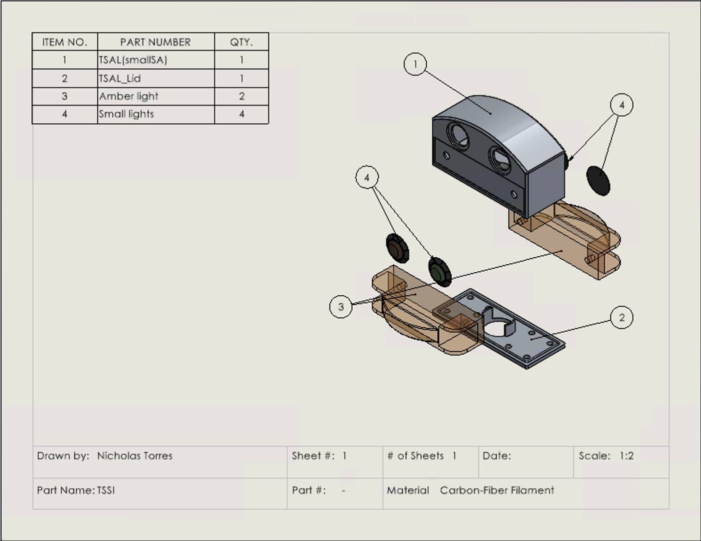

I led the mechanical redesign of the Tractive System Status Indicator (TSSI), a rule-critical safety device that communicates the high-voltage state of the vehicle to the driver, team members, and event officials. The project addressed prior failures in waterproofing, mounting stability, and manufacturability while adapting to updated FSAE Electric rules that prohibited clamp mounting. The goal was to deliver a compact, fully waterproof, resin-printed enclosure that met brightness and visibility requirements, mounted to welded chassis tabs, and withstood real competition conditions.
I owned the full mechanical design of the TSSI enclosure, defining requirements from FSAE rules and prior-year failure modes. My responsibilities included sealing strategy, enclosure CAD, manufacturing process selection, and coordination with the chassis and low-voltage electrical teams.
To achieve reliable waterproofing, I designed an O-ring–sealed enclosure using a ⅛-inch X-ring at approximately 15% compression and created custom-cut gaskets for each LED interface to ensure consistent sealing. I selected SLA/MSLA resin printing for its near-zero porosity and tight tolerance control, enabling reliable O-ring glands and improved dimensional accuracy compared to FDM printing. With clamp mounting no longer allowed, I collaborated with the chassis team to design welded mounting tabs and positioned the TSSI near the top of the roll hoop while maintaining wiring clearances and structural integrity. To improve packaging and reduce drag, I selected compact DOT/SAE-certified light modules and minimized the enclosure’s external surface area.
Late in the design process, the enclosure footprint was significantly reduced at the request of project leadership, requiring rapid internal repackaging, gasket revalidation, and geometry refinement without compromising waterproofing or fit. In parallel, uncertainty surrounding the low-voltage system’s transition from 12 V to 24 V forced redesigns of wiring exits and strain-relief features and delayed final waterproof validation.
The final design delivered a rule-compliant, fully waterproof TSSI with improved structural stability, reduced frontal area, and flexibility to accommodate evolving electrical standards. Future iterations could improve serviceability and reliability through modular light cartridges, an integrated conformal-coated PCB, overmolded cable exits, and CFD-guided aerodynamic refinement.
